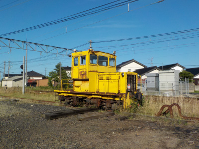
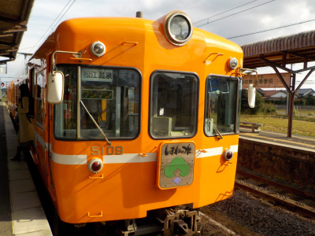
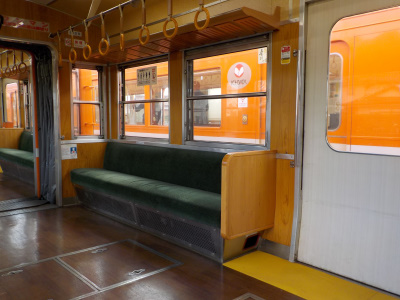
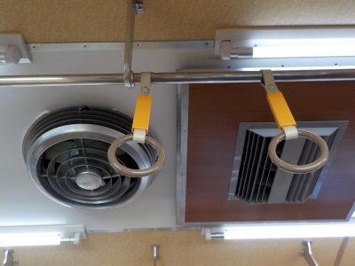

川跡駅にあるこの黄色いのって何でしょう？。
2023/06/03

川跡駅の西側にいつもあって何だろうと思っていました。画像検索したら軌道モーターカーってのが出ました。
線路のメンテナンスで使うものらしいです。たぶんもう動いていないので、オブジェで置いてあるのかな。
島根県出雲市武志町189−4
2023/06/03

川跡駅の西側にいつもあって何だろうと思っていました。画像検索したら軌道モーターカーってのが出ました。
線路のメンテナンスで使うものらしいです。たぶんもう動いていないので、オブジェで置いてあるのかな。
2021/11/14

普通に電車に乗ると写真を撮る暇はあまりないですが、川跡駅は乗り換えがあるため停車時間が長いので写真が撮りやすかったです。

今回乗ったのはちょっとクラシックな車両でした。落ち着いた雰囲気でいいですね。

天井の空調からも歴史を感じますね。
撮り鉄とか乗り鉄さんじゃないですが、電車に乗ったら記念に写真を撮るのっていいですね。
移動手段が観光施設になった気がします。